Office of the Practical Training and Placement (PTP) Section
Kindly accept our best Greetings from National Institute of Technology Uttarakhand (NITUK)!!!
We take this profound opportunity to invite your esteemed organization to participate in our campus placement process for the session 2022-23. NITUK is one among the ten newly established NITs in 2010 by the The Ministry of Education (Shiksha Mantralaya), Government of India. NITUK is Technical Education Hub of our Green and Clean environment in the state of Uttarakhand and it provides peaceful and serene environment for the academic development. The Institute admits students to B.Tech. courses through Joint Entrance Examination (JEE) Mains (formerly known as AIEEE) and to M. Tech. courses through Graduate Aptitude Test in Engineering (GATE), both the examinations conducted all over India by National Testing Agency (NTA). Over a decay, the Institute has made its place amongst the leading technical institutions of the country and secured
186 rank in National Institute of Ranking Framework (NIRF) in 2021 in spite of the remote location of the institute. Institute offers B.Tech programs in Civil Engineering, Computer Science and Engineering, Electronics and Communication Engineering, Electrical and Electronics Engineering and Mechanical Engineering, M. Tech in all Engineering programs and also offers Ph. D. in Engineering, Sciences and Humanities. Excellent teaching learning ambience, young and dedicated faculty, significant contribution to research work and commitment to the community are our hallmark.
We are highly grateful that you aim to get a long lasting association with NIT Uttarakhand for recruiting our students towards the growth of industry, academia and Nation itself.
With Warm regards,
Office of the Practical Training and Placement
National Institute Technology, Uttarakhand
Email: tnpnituk@nituk.ac.in
Phone No.: +91-1346-257412/425